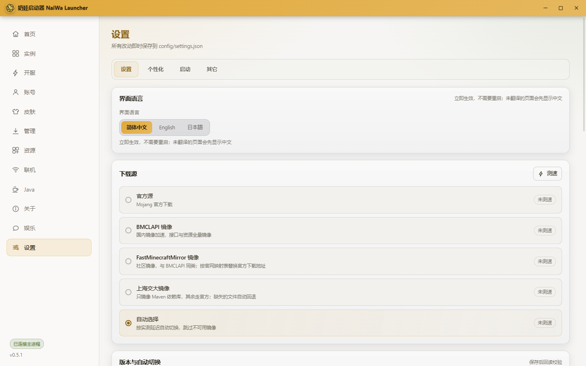
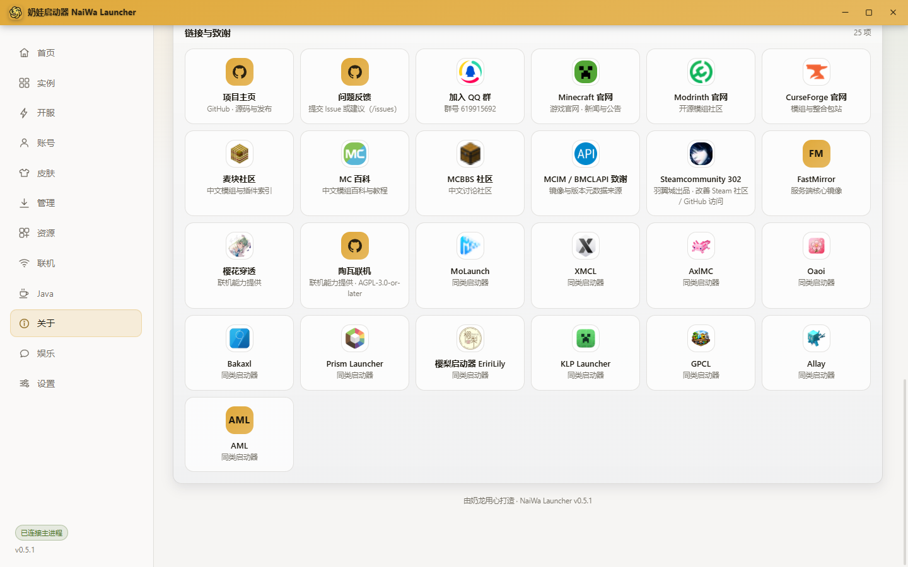
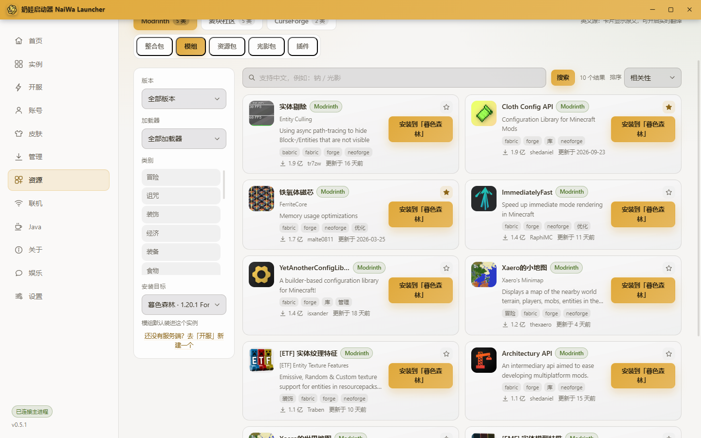
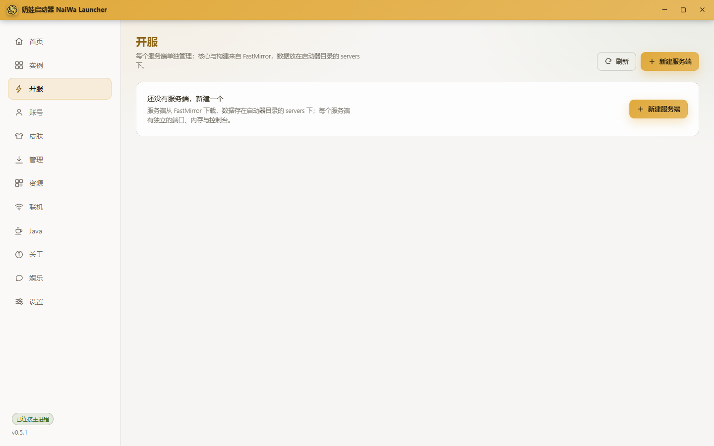
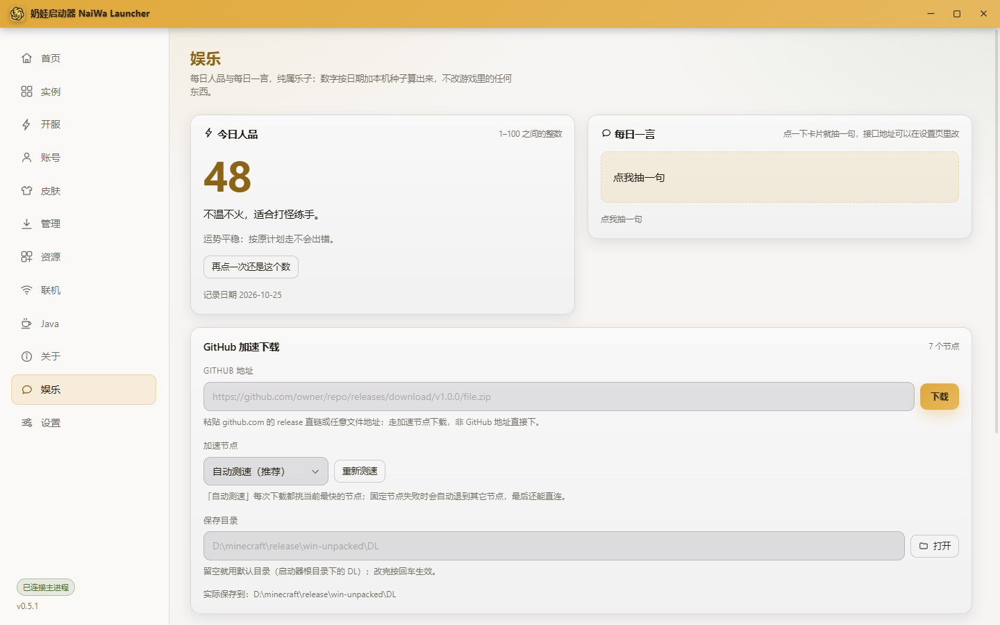

三源资源库
Modrinth、CurseForge、麦块社区同时搜索，模组 / 光影 / 资源包 / 插件 / 整合包一处装完，装之前先选目标：实例还是服务端。
开源 · 免费 · 无广告
奶娃启动器是一款面向 Windows 的 Minecraft Java 版启动器。三个资源源一个搜索框搜完，一个实例就是一个文件夹，八种服务端核心与五种模组加载器随你下；JDK 自动匹配、启动失败自动诊断，崩溃不用自己猜。
免安装版 · 访问密码 e71u


功能
从下载资源到开一个服，中间那些麻烦步骤，能自动化的一律自动化，不能自动化的至少说清楚原因。
Modrinth、CurseForge、麦块社区同时搜索，模组 / 光影 / 资源包 / 插件 / 整合包一处装完，装之前先选目标：实例还是服务端。
走社区镜像 MCIM（MCMirror），不用申请 API Key 就能搜索与下载；类别名跟随界面语言，中文界面就是中文分类。
一个实例等于 versions\<实例名>\ 一个文件夹：版本 json、jar、mods、config、saves 同处一室，和 PCL2 的习惯一致。
每个实例的模组、配置、存档互不影响。删实例就是把那个文件夹删掉，不给你留一堆说不清来源的残留。
内存上限按本机物理内存自动给出建议值，正常游玩不折腾参数；运行中还能一键清理掉多余的内存占用。
Vanilla、Paper、Purpur、Folia、Fabric、Forge、NeoForge、Arclight 一键下载；插件与模组可启用、停用、更新、删除。
内置规则先给结论，需要更细的可以接 DeepSeek 做一次 AI 分析，或直接把崩溃报告送去在线分析页。
Fabric、Quilt、Forge、NeoForge、LiteLoader 自由组合；JDK 按版本自动匹配，从多个源下载，缺什么补什么。
局域网直连、樱花穿透、陶瓦联机都内置好了。开个房间给朋友，不用先教对方怎么配网络。
资源
Modrinth、CurseForge、麦块社区并列搜索，同一个模组在不同源出现的重复结果会合并展示，来源、文件名、大小都写清楚，不用猜自己点的是哪一个。

实例
版本描述、主 jar、natives、mods、config、saves 全在同一个目录里，启动器自己的记录放在旁边的 naiwa\instance.json。想把实例拷到别的盘、发给朋友、或者和 PCL2 换着用，拷一个文件夹就够。
实例路径.minecraft\versions\<实例名>\
开服
选核心、选版本、点下载，其余交给启动器。开完还能在同一个界面里管插件和模组：看数量、搜索、刷新、打开目录，启用 / 停用 / 更新 / 删除都在这里。
Paper / Purpur / Folia 走插件，Fabric / Forge / NeoForge 走模组，Arclight 两者都有；原版服务端不显示插件入口，并说明原因。停用不会删文件，只是把 .jar 改名成 .jar.disabled。

娱乐与个性化
每日人品按日期固定、每日一言可以换成你自己的 API，GitHub 加速下载与自定义文件下载各有一个入口，下载默认落在 <根目录>\DL。
<根目录>\DL
还有这些
一些不常被提起、但每天都在用的部分。
微软正版登录与离线账号并存。正版账号的皮肤只读展示，官方披风一并显示，不会替你改皮肤。
加载器、JDK、内存一次配好。启动耗时与内存占用有面板可看，卡在哪一步不用靠猜。
内置检查更新，下载带百分比进度，静默覆盖安装后自动重启，中途不弹黑框。
官方、BMCLAPI、上海交大、FastMinecraftMirror、自动测速五档可切，失败自动回退。
下载
在 GitHub Releases 里选择安装版或免安装版，取最新的那一份就行。
更新日志
这里只放最近三条，完整历史在 独立更新日志页面，与仓库的 CHANGELOG.md 一致。
https://jijiguowang123.github.io/naiwai/，排在致谢最前面；致谢共 26 项。versions\<实例名>\ 一个目录，版本 json、client jar、natives、mods、config、saves 都在里面；建实例后会清掉不再需要的共享原版目录。libraries、assets 与没人使用的原版版本目录。常见问题
不用。启动器按所选版本自动匹配对应的 JDK，并从多个源下载；换版本时也不需要手动折腾环境变量。
不需要。CurseForge 的内容通过社区镜像 MCIM（MCMirror）访问，不填 Key 也能搜索与下载。镜像偶尔会比官方慢一点，遇到 404 换一个源或稍后再试即可。
不会。存档、配置、模组都在实例自己的目录里，删除实例只删那个目录。「游戏资源清理」只清 libraries、assets 和没人使用的原版版本目录，实例目录、启动器配置、servers、skins、DL 一律不碰。
可以。实例布局和 PCL2 一致，都是 versions\<实例名>\ 一个目录。早期版本的实例在实例页点「迁移旧版本布局」即可换成新布局；不点也照旧能启动，启动器不会偷偷搬文件。
不一定。支持微软正版登录，也支持离线账号。登录正版后可以只读查看自己的皮肤与官方披风，启动器不会修改它们。
Vanilla、Paper、Purpur、Folia、Fabric、Forge、NeoForge、Arclight 八种。开完可以在同一个界面里管理插件或模组：启用、停用、更新、删除，停用只是改名成 .jar.disabled，重启服务端后生效。
先看内置规则给出的诊断结论——多数问题（内存、JDK、模组冲突、版本不符）它都能直接指出来。想更细可以在设置里填一个 DeepSeek API Key，让 AI 分析崩溃日志末尾；AI 失败或没填 Key 会自动回退到内置诊断，不会打断启动。诊断弹窗里还有「在线分析崩溃报告」入口，注意它会把报告上传到第三方站点。
局域网直连、樱花穿透、陶瓦联机三种方式都在启动器里，按你们的网络情况选一个就行。同一局域网直接开房间最简单；跨网段建议用穿透。
完全免费，MIT 协议开源，没有广告、没有捆绑、没有「推荐安装」。源码就放在 GitHub 上，你可以自己编译一份。
安装包目前没有做代码签名，部分杀软会提示「未知发布者」，或对 Electron 自解压的行为报可疑。请只从本页或 GitHub Releases（github.com/JIJIGUOWANG123/NaiWaLauncher）下载，并核对文件名与大小；介意的话可以改用 Releases 里的免安装版。
目前只发布 Windows x64 构建。代码是 MIT 开源的，理论上可以自己改，但官方不提供其它平台的安装包，也不保证在其它平台上能跑通。
社区
问题、建议、想法都可以提；提 Issue 时附上启动器的诊断包，能省掉一大半来回。
没有这些项目和服务，这个启动器写不出来。
图标、素材与数据分别归各自权利方所有；本页展示的应用截图为奶娃启动器自身的界面。